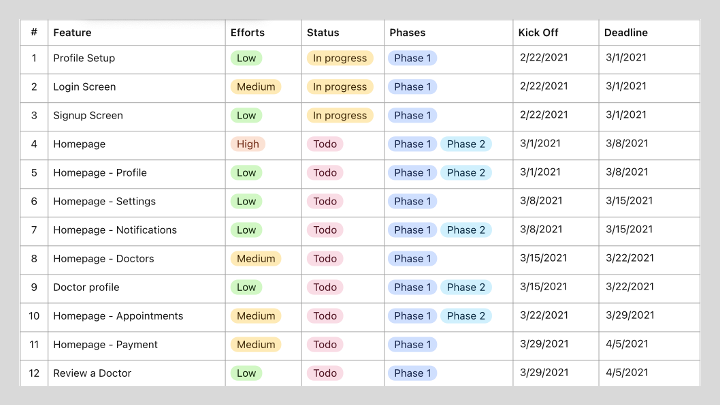
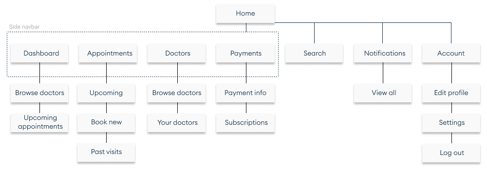
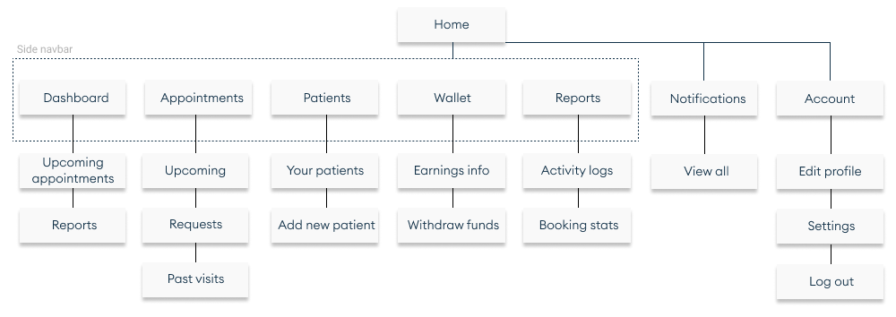
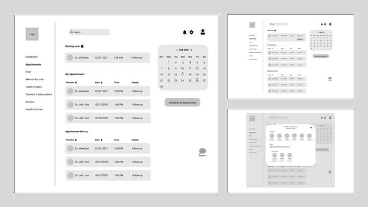
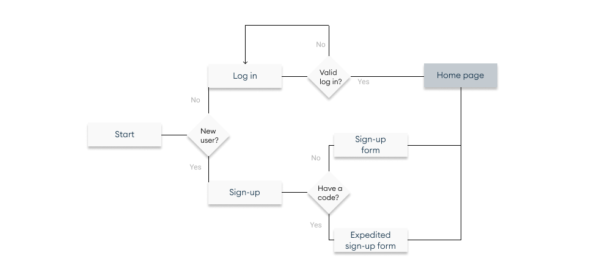
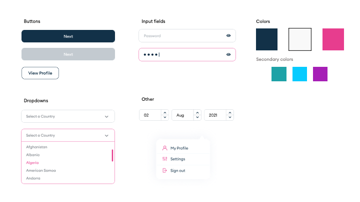

OVERVIEW
As the first design hire at the healthtech startup Vien Health, I organized and led
the design process of the web app minimum viable product for launch.
Vien Health's goal is to make healthcare more accessible in Ghana by establishing a trusted
telehealth platform.
My Role
Product designer - responsible for information architecture, user flows, wireframes, prototypes and design system
Timeline
Dec - March '21
PROCESS
Working directly with a PM, I finalized the features to include in the MVP and crafted a roadmap to ensure the growing design team met deadlines. The web app platform has two distinct user types (patients and medical providers) with different features needed, so we kept these separate throughout the process.

Sample of the feature roadmap for the patient app.
After finalizing the features, I created sitemaps for the patient and provider web apps to visualize the information architecture.


Initial sitemaps for the patient + provider apps.
The design team worked in sprints to build the web app - we handed off prototypes weekly to development. New features started out with low-fidelity wireframes and user flows to visualize the possible use cases.

A few initial, low-fidelity wireframes.
User flow for the patient sign-in process.
After testing + critiquing the wireframes, we moved to high-fidelity prototypes. To build quickly and consistently, we established a design system to follow. The system started off with colors, typography, and basic elements; we added new components as needed.



Sample of the design system + components.
High-fidelity screens.
FINAL THOUGHTS
The Vien Health web app is set to launch this year, 2021. In the meantime you can check out the marketing website, which I also worked on, here.
SEE ANOTHER PROJECT: